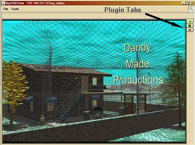
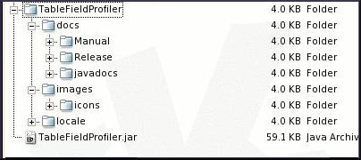

Introduction
The MyJSQLView application as of v3.17 supports a fully
modular plugin architecture. The Tutorial, MyJSQLView Plugin Basics should
be reviewed before delving into this advanced tutorial because introductory
concepts like plugin loading and interface requirements are detailed there.
In this tutorial we will concentrate on the Table Field Profiler plugin which
is either incorporated into the MyJSQlView application or available for
download from the
Dandy Made Productions website. Though an indepth discussion will
not be presented in this tutorial of the Table Field Profiler analysis tools
we will be covering the creation of Menus, Toolbars, and Resource derivation.
In the process of discussing these more advanced concepts involved with plugin
creation several addition MyJSQLView APIs will be introduced. A developer can
review the MyJSQLView API
by referring to the docs/javadocs directory in the installation directory
of the application.

Figure 1. MyJSQLView Main Interface
MyJSQLView_PluginModule
The core aspect of the MyJSQLView plugin module architecture is
oriented around the abstract MyJSQLView_PluginModule class. This class was
discussed in the basics tutorial and all plugins must extend this interface
through a class called PluginModule. Remember MyJSQLView when looking for
plugins to load will only accept the class name PluginModule. So following
in this vein the Table Field Profiler also has a PluginModule class and is
shown in Listing 1 below. In the MyJSQLView Plugin Basics Tutorial
the PluginModule classes only implemented the most essential methods required
by the PluginModuleInterface such as initPlugin(), getName(), getPanel(), and
setDBTables(). In the Table Field Profiler's PluginModule class we likewise
have these methods, but also override the methods getAuthor(), getVersion(),
getDescription(), getTabIcon(), getMenuBar(), and getToolBar() from the
MyJSQLViewPluginInterface class. All of these additional methods the Table Field
Profiler PluginModule class overrides return constructs from the Table Field
Profiler's main class TableFieldProfiler, except the getName(), getAuthor(),
and getDescription() methods.
Code Listing 1: (Table Field Profiler PluginModule.java)
//=================================================================
// TableFieldProfiler PluginModule
//=================================================================
//
// This class provides the hook to incorporate a external plugin
// module into the MyJSQLView application.
//
// < PluginModule.java >
//
//=================================================================
// Copyright (C) 2010-2011 Dana M. Proctor
// Version 2.3 09/29/2011
//
// This program is free software; you can redistribute it and/or
// modify it under the terms of the GNU General Public License
// as published by the Free Software Foundation; either version
// 2 of the License, or (at your option) any later version. This
// program is distributed in the hope that it will be useful,
// but WITHOUT ANY WARRANTY; without even the implied warranty
// of MERCHANTABILITY or FITNESS FOR A PARTICULAR PURPOSE. See
// the GNU General Public License for more details. You should
// have received a copy of the GNU General Public License along
// with this program; if not, write to the Free Software Foundation,
// Inc., 59 Temple Place, Suite 330, Boston, MA 02111-1307 USA
// (http://opensource.org)
//
//=================================================================
// Revision History
// Changes to the code should be documented here and reflected
// in the present version number. Author information should
// also be included with the original copyright author.
//=================================================================
// Version 1.0 Initial Dandy Data Profiler MyJSQLView_PluginModule Class.
~
~
~
// 2.3 Added Class Method getAuthor() & getDescription().
//
//-----------------------------------------------------------------
// danap@dandymadeproductions.com
//=================================================================
package com.dandymadeproductions.tablefieldprofiler;
import java.util.ArrayList;
import javax.swing.ImageIcon;
import javax.swing.JMenuBar;
import javax.swing.JPanel;
import javax.swing.JToolBar;
import com.dandymadeproductions.myjsqlview.datasource.ConnectionManager;
import com.dandymadeproductions.myjsqlview.gui.MyJSQLView_Frame;
import com.dandymadeproductions.myjsqlview.plugin.MyJSQLView_PluginModule;
/**
* The PluginModule class provides the hook to incorporate a external
* plugin module into the MyJSQLView application.
*
* @author Dana M. Proctor
* @version 2.3 09/29/2011
*/
public class PluginModule extends MyJSQLView_PluginModule
{
// Class Instances
// private MyJSQLView_Frame parent;
private TableFieldProfiler dataProfiler;
//==============================================================
// MyJSQLView_PluginModule Constructor.
//==============================================================
public PluginModule()
{
super();
}
//==============================================================
// Class method to start the classes thread.
//==============================================================
public void initPlugin(MyJSQLView_Frame mainFrame, String path)
{
// Main Class
dataProfiler = new TableFieldProfiler(mainFrame, path, ConnectionManager.getTableNames());
}
//==============================================================
// Class method to meet the interface requirements for getting
// the name of the module.
//==============================================================
public String getName()
{
return "Table Field Profiler";
}
//==============================================================
// Class method to meet the interface requirements for getting
// the author of the module.
//==============================================================
public String getAuthor()
{
return "Dandy Made Productions";
}
//==============================================================
// Class method to return the version release number of the
// plugin module.
//==============================================================
public String getVersion()
{
return TableFieldProfiler.getVersion();
}
//==============================================================
// Class method to meet the interface requirements for getting
// the description for the module.
//==============================================================
public String getDescription()
{
return "The TableFieldProfiler module encompasses aspects that give general\n"
+ "information for a database's table fields and also a cluster and number\n"
+ "analysis. The information is presented in the form of graphic charts,\n"
+ "pie, bar, & bubble for the field's record count, distribution, and\n"
+ "patterns. The analysis aspect of the profiler gives frequency, variation,\n"
+ "percentile, and clustered average information for a field.";
}
//==============================================================
// Class method to meet the interface requirements of returning
// a ImageIcon that will be used as the plugin's tab Icon.
//==============================================================
public ImageIcon getTabIcon()
{
return dataProfiler.getTabIcon();
}
//==============================================================
// Class method to meet the interface requirements of returning
// a Menu Bar that will be used as the plugin's Menu Bar.
//==============================================================
public JMenuBar getMenuBar()
{
return dataProfiler.getMenuBar();
}
//==============================================================
// Class method to meet the interface requirements of returning
// a Too Bar that will be used as the plugin's Tool Bar.
//==============================================================
public JToolBar getToolBar()
{
return dataProfiler.getToolBar();
}
//==============================================================
// Class method to meet the interface requirements for returning
// a JPanel for inclusion in the MyJSQLView application's main
// tab.
//==============================================================
public JPanel getPanel()
{
return dataProfiler.getPanel();
}
//==============================================================
// Class method to meet the interface requirements for being
// able to set the database tables.
//==============================================================
public void setDBTables(ArrayList<String> tableNames)
{
dataProfiler.setDBTables(tableNames);
}
}
|
Like all plugins for MyJSQLView a developer should orientate initialization
of components for a plugin in the initPlugin() method of the PluginModule class.
In this method for the Table Field Profiler module we essentially just create
the class object dataProfiler, of type TableFieldProfiler. The dataProfiler
object forms the basis for the module and takes three arguments. The first two
come directly from the call to the initPlugin() method and are the MyJSQLView's
main frame and a path object. The third is a call to the MyJSQLView's class
ConnectionManager for the database tables associated with a connection. We will
discuss shortly more about the dataProfiler object, but first lets speak more
about of the path argument because it is used to derive resources for the plugin
The path instance that is passed to plugin modules gives the URL that was derived
by MyJSQLView in loading the plugin's JAR file. A developer should create resources
for a plugin with this in mind. The standard taken by the MyJSQLView group is to
have a directory in this path, location of JAR file, by the same name as the plugin
and in this directory have images and other pertinent objects required by the plugin.
Please see Figure 2. below. With this in mind lets move on to the dataProfiler
object to understand the use of this path and the other arguments in the instantiation
of this class.

Figure 2. Plugin Directory Structure
TableFieldProfiler Class
Though the TableFieldProfiler class is the core main object for
the Table Field Profiler plugin it is not per say a main class. All plugins do
not have a main class, but has discussed previously and in the Plugin Basics
just the PluginModule class which MyJSQLView initializes through the initPlugin()
method and then loads the various components needed to utilize the plugin. The
main object for plugins is always a Java JPanel component that is the face of
the plugin in the MyJSQLView application tab interface. So what we will see in
the TableFieldProfiler core class is the creation of a top JPanel object and
since this plugin is more versatile than a basic one the creation of resources
and menu and toolbar objects. Listing 2. below shows the TableFieldProfiler
class and as seen is composed of a constructor and six methods. Three of the
methods just return the objects indicated, JPanel, JMenuBar, and JToolBar. The
other two a version String and an ImageIcon. The last method setDBTables() was
highlighted in the Plugin Basics and is used to reload database tables if that
action is taken within the MyJSQLView application.
Code Listing 2: (Table Field Profiler Main Class TableFieldProfiler.java)
//=================================================================
// TableFieldProfiler
//=================================================================
//
// This class provides the main access point for setting up the
// requirements for the Table Field Profiler Module for the MyJSQLView
// application.
//
// < TableFieldProfiler.java >
//
//=================================================================
// Copyright (C) 2010-2012 Dana M. Proctor
// Version 4.8 09/17/2012
//
// This program is free software; you can redistribute it and/or
// modify it under the terms of the GNU General Public License
// as published by the Free Software Foundation; either version
// 2 of the License, or (at your option) any later version. This
// program is distributed in the hope that it will be useful,
// but WITHOUT ANY WARRANTY; without even the implied warranty
// of MERCHANTABILITY or FITNESS FOR A PARTICULAR PURPOSE. See
// the GNU General Public License for more details. You should
// have received a copy of the GNU General Public License along
// with this program; if not, write to the Free Software Foundation,
// Inc., 59 Temple Place, Suite 330, Boston, MA 02111-1307 USA
// (http://opensource.org)
//
//=================================================================
// Revision History
// Changes to the code should be documented here and reflected
// in the present version number. Author information should
// also be included with the original copyright author.
//=================================================================
// Version 1.0 Initial TableFieldProfiler Class.
~
~
~
// 4.8 Removed Class Instances path, Created Class Instance imagesDirectory.
// Passed as Argument in Creation of Main Tab Panel for Analysis.
//
//-----------------------------------------------------------------
// danap@dandymadeproductions.com
//=================================================================
package com.dandymadeproductions.tablefieldprofiler;
import java.awt.CardLayout;
import java.util.ArrayList;
import javax.swing.ImageIcon;
import javax.swing.JMenuBar;
import javax.swing.JPanel;
import javax.swing.JToolBar;
import com.dandymadeproductions.myjsqlview.MyJSQLView;
import com.dandymadeproductions.myjsqlview.gui.MyJSQLView_Frame;
import com.dandymadeproductions.myjsqlview.utilities.MyJSQLView_ResourceBundle;
/**
* The TableFieldProfiler class provides the main access point for setting up
* the requirements for the Table Field Profiler Module for the MyJSQLView
* application.
*
* @author Dana M. Proctor
* @version 4.8 09/17/2012
*/
class TableFieldProfiler
{
// Class Instances
private MyJSQLView_Frame parent;
private String imagesDirectory;
private ImageIcon tabIcon;
private Profiler_MenuBar menuBar;
private Profiler_ToolBar toolBar;
private JPanel dataProfilerMainPanel;
private CardLayout profilerCardLayout;
private TableFieldChartsPanel tableFieldInformationPanel;
private TableFieldAnalysisPanel tableFieldAnalysisPanel;
private TableFieldClusterAnalysisPanel tableFieldClusterAnalysisPanel;
private MyJSQLView_ResourceBundle resourceBundle;
protected static final String INFORMATION_CARD = "Information";
protected static final String NUMBER_ANALYSIS_CARD = "Number Analysis";
protected static final String CLUSTER_ANALYSIS_CARD = "Cluster Analysis";
private final static String version = "Version 4.8";
//==============================================================
// TableFieldProfiler Constructor
//==============================================================
TableFieldProfiler(MyJSQLView_Frame parent, String path, ArrayList<String> tableNames)
{
this.parent = parent;
// Constructor Instances.
String pathDirectory, localeDirectory;
MenuActionListener pluginMenuListener;
// Setup the Main panel and the plugin's components.
profilerCardLayout = new CardLayout();
dataProfilerMainPanel = new JPanel(profilerCardLayout);
// file & http, locale resource not in jar
pathDirectory = path + "/" + "TableFieldProfiler" + "/";
localeDirectory = "locale/";
imagesDirectory = "images/icons/";
// file & http, locale resource in jar
//pathDirectory = path + "/" + "TableFieldProfiler.jar";
//localeDirectory = "lib/plugins/TableFieldProfiler/locale/";
//imagesDirectory = "lib/plugins/TableFieldProfiler/images/icons/";
resourceBundle = new MyJSQLView_ResourceBundle(pathDirectory);
resourceBundle.setLocaleResource(localeDirectory, "TableFieldProfiler", MyJSQLView.getLocaleString());
tabIcon = resourceBundle.getResourceImage(imagesDirectory + "informationIcon.png");
// Table Field Information Panel.
tableFieldInformationPanel = new TableFieldChartsPanel(resourceBundle, imagesDirectory,
tableNames);
dataProfilerMainPanel.add(INFORMATION_CARD, tableFieldInformationPanel);
// Table Field Analysis Panel.
tableFieldAnalysisPanel = new TableFieldAnalysisPanel(parent, resourceBundle, imagesDirectory,
tableNames);
dataProfilerMainPanel.add(NUMBER_ANALYSIS_CARD, tableFieldAnalysisPanel);
// Table Field Cluster Analysis Panel.
tableFieldClusterAnalysisPanel = new TableFieldClusterAnalysisPanel(resourceBundle, imagesDirectory,
tableNames);
dataProfilerMainPanel.add(CLUSTER_ANALYSIS_CARD, tableFieldClusterAnalysisPanel);
// Setup the MenuBar and ToolBar to be used by the plugin.
pluginMenuListener = new MenuActionListener(parent, resourceBundle, tableFieldInformationPanel,
tableFieldAnalysisPanel, tableFieldClusterAnalysisPanel,
dataProfilerMainPanel, profilerCardLayout);
menuBar = new Profiler_MenuBar(parent, resourceBundle, pluginMenuListener);
toolBar = new Profiler_ToolBar("Table Field Profiler ToolBar", parent, resourceBundle,
imagesDirectory, pluginMenuListener);
}
//==============================================================
// Class method to to the plugin's JMenuBar
//==============================================================
protected JMenuBar getMenuBar()
{
return menuBar;
}
//==============================================================
// Class method get the plugin's JToolBar
//==============================================================
protected JToolBar getToolBar()
{
return toolBar;
}
//==============================================================
// Class method to get the main panel associated with the plugin.
//==============================================================
protected JPanel getPanel()
{
return dataProfilerMainPanel;
}
//==============================================================
// Class method to get the plugin's version.
//==============================================================
protected static String getVersion()
{
return version;
}
//==============================================================
// Class method to get the icon that will be used in the
// MyJSQLView tab.
//==============================================================
protected ImageIcon getTabIcon()
{
return tabIcon;
}
//==============================================================
// Class method to set the database tables.
//==============================================================
protected void setDBTables(ArrayList<String> tableNames)
{
// Create panels if needed.
if (tableFieldInformationPanel == null || tableFieldAnalysisPanel == null
|| tableFieldClusterAnalysisPanel == null)
{
tableFieldInformationPanel = new TableFieldChartsPanel(resourceBundle, imagesDirectory, tableNames);
dataProfilerMainPanel.add("Information", tableFieldInformationPanel);
tableFieldAnalysisPanel = new TableFieldAnalysisPanel(parent, resourceBundle, imagesDirectory,
tableNames);
dataProfilerMainPanel.add("Analysis", tableFieldAnalysisPanel);
tableFieldClusterAnalysisPanel = new TableFieldClusterAnalysisPanel(resourceBundle, imagesDirectory,
tableNames);
dataProfilerMainPanel.add(CLUSTER_ANALYSIS_CARD, tableFieldClusterAnalysisPanel);
}
else
{
// Reload Information Charts.
tableFieldInformationPanel.reloadPanel(tableNames);
tableFieldInformationPanel.repaint();
// Reload Analysis.
tableFieldAnalysisPanel.reloadPanel(tableNames);
tableFieldAnalysisPanel.repaint();
tableFieldClusterAnalysisPanel.reloadPanel(tableNames);
tableFieldClusterAnalysisPanel.repaint();
}
}
}
|
The constructor for the TableFieldProfiler class like most classes
is where the setup for the Table Field Profiler plugin occurs. The first
thing that is done in the constructor is to create the JPanel, dataProfilerMainPanel.
This panel is the face of the plugin that users will see in the selected
tab for the Table Field Profiler module. Since this particular plugin is
composed of three tools, a field information, field number analysis units and
cluster analysis, we set the layout for that panel to a cardlayout. In that way
the three tools can be switched as required by the user. Once that is done we
begin the derivation of a resource source for the plugin that is based on the
path argument string. As of v3.40 of MyJSQLView all plugins have the
ability to be loaded remotely rather than just from the local machine's file
system. When a developer creates the plugin a decision should be made to allow
these local/remote resources to be either sourced in the JAR file of the
plugin or not.
In the TableFieldProfiler constructor we see the two ways that this may be
implemented, one commented out. The example uses resources that will NOT be
included in the JAR and uses three instances to derive the pathDirectory,
localeDirectory, & imagesDirectory from the path and layout that was
chosen by the plugin as shown in Figure 2. We then create a MyJSQLView_ResourceBundle
based on the pathDirectory and set the locale for the plugin. The language
locale can be obtained directly from the MyJSQLView API method getLocaleString().
That language locale string is chosen by the user when MyJSQLView is first
run or by argument to the application. Though one could use the standard Java
API for a Resource object MyJSQLView uses its own resource class which provides
greater flexibility, control and organizing resources in a plugin environment.
In the constructor we now see the use of a resource object. The tabIcon is
acquired through the MyJSQLView_ResourceBundle's getResourceImage(). In that
method we pass the imagesDirectory and the name of the image file. The tabIcon
will be returned through the class method getTabIcon() to the plugin module
so that it may be displayed in MyJSQLview's main tab pane. Likewise we may
also use the resourceBundle oject to obtain a getResourceString(). That method
is demonstrated in the discussion of the Profiler_MenuBar class below.
Now that all the main setup in the constructor has been
accomplished then the only activities left to do is to create the three
tools for the plugin, and of course the menu and toolbar objects. The three
tools are added to the dataProfilerMainPanel. Notice we pass as arguments to
those three classes the resourceBundle and imagesDirectory objects so they can
establish there own reference to resources as required. The menu and toolbar
objects for the plugin are created through two separate classes Profiler_MenuBar
and Profiler_ToolBar. An Action Listener object is also created to handle the
processing of events in the plugin. The Action Listener class, MenuActionListener,
is not covered in this tutorial, but is supplied like all resources via
links available at the end of this tutorial.
Note: Any classes given as part of this tutorial are covered by the GPL
and may be used in accordance with that license.
Table Field Profiler Profiler_MenuBar Class
The last aspect of this advanced MyJSQLView plugin tutorial
that is to be dealt with is the creation of a custom menu bar and tool bar
components for the Table Field Profiler plugin. MyJSQLView allows each
plugin to share its controls, action events, and create their own. As each
plugin tab is selected in the main interface of MyJSQLView the MenuBar
and ToolBar for that plugin is activated and available for use. Since
a tool bar houses essential duplicate items in the form of buttons with
icons as a menu system we will just review the MenuBar object for the
Table Field Profiler plugin.
The partial Code Listing 3. shown below is of the Table Field
Profiler's Profiler_MenuBar class. Though the menu systems has both a
File and Tool entry all that is needed to demonstrate the desired concepts
is the creation of the File menu. What one should note immediately about
this class is it extends the Java JMenuBar component so that its meets
the needs of a standard MenuBar. The constructor for the Profiler_MenuBar
class is straight forward with the assignment of the three passed arguments
to class instances. Remember those objects were the MyJSQLView main frame,
the resourceBundle, and the custom Action Listener object. Up to this
point we have not used the MyJSQLView main frame object, but we will
shortly. The constructor code continues with calling two helper methods
to build the file and tools menu systems and then producing a custom logo
object. Of interest here is the use of the MyJSQLView_Utils class to
obtain the icons directory and loading one of MyJSQLView's own icon
images for the logo.
Code Listing 3: (Table Field Profiler Profiler_MenuBar.java)
//=================================================================
// TableFieldProfiler Profiler_MenuBar
//=================================================================
//
// This class is used to constructed the menubar for the Table
// Field Profiler plugin module.
//
// < Profiler_MenuBar.java >
//
//=================================================================
// Copyright (C) 2010-2012 Dana M. Proctor.
// Version 2.4 09/17/2012
//
// This program is free software; you can redistribute it and/or
~
~
~
//
//=================================================================
// Revision History
// Changes to the code should be documented here and reflected
// in the present version number. Author information should
// also be included with the original copyright author.
//=================================================================
// Version 1.0 Original Profiler_MenuBar Class.
~
~
~
// 2.4 Changed the logoIcon in Constructor to be Obtained From the
// MyJSQLView Resource Bundle.
//
//-----------------------------------------------------------------
// danap@dandymadeproductions.com
//=================================================================
package com.dandymadeproductions.tablefieldprofiler;
import java.awt.Font;
import javax.swing.BorderFactory;
import javax.swing.Box;
import javax.swing.ImageIcon;
import javax.swing.JButton;
import javax.swing.JMenu;
import javax.swing.JMenuBar;
import javax.swing.JMenuItem;
import com.dandymadeproductions.myjsqlview.MyJSQLView;
import com.dandymadeproductions.myjsqlview.gui.MyJSQLView_Frame;
import com.dandymadeproductions.myjsqlview.gui.MyJSQLView_MenuActionCommands;
import com.dandymadeproductions.myjsqlview.utilities.MyJSQLView_ResourceBundle;
import com.dandymadeproductions.myjsqlview.utilities.MyJSQLView_Utils;
/**
* The Profiler_MenuBar class is used to constructed the menubar for the
* Table Field Profiler plugin module.
*
* @author Dana M. Proctor
* @version 2.4 09/17/2012
*/
class Profiler_MenuBar extends JMenuBar
{
// Instance & Class Fields.
private static final long serialVersionUID = 1227314757701051137L;
private MyJSQLView_Frame mainFrame;
private MyJSQLView_ResourceBundle resourceBundle;
private transient MenuActionListener menuListener;
public static final String ACTION_FILE_OPEN = "FO";
public static final String ACTION_FIELD_INFORMATION = "TFI";
public static final String ACTION_FIELD_NUMBER_ANALYSIS = "TFNA";
public static final String ACTION_FIELD_CLUSTER_ANALYSIS = "TFCA";
//==============================================================
// Profiler_MenuBar JMenuBar Constructor.
//==============================================================
protected Profiler_MenuBar(MyJSQLView_Frame parent, MyJSQLView_ResourceBundle resourceBundle,
MenuActionListener plugin)
{
mainFrame = parent;
this.resourceBundle = resourceBundle;
menuListener = plugin;
// Constructor Instances.
String iconsDirectory;
// JMenu Bar for the plugin.
setBorder(BorderFactory.createEtchedBorder());
// Creating the File, & Tools Menus
createFileMenu();
createToolsMenu();
add(Box.createHorizontalGlue());
// Logo
iconsDirectory = MyJSQLView_Utils.getIconsDirectory() + MyJSQLView_Utils.getFileSeparator();
ImageIcon logoIcon = MyJSQLView.getResourceBundle().getResourceImage(iconsDirectory + "myjsqlviewIcon.gif");
JButton logoIconItem = new JButton(logoIcon);
logoIconItem.setDisabledIcon(logoIcon);
logoIconItem.setFocusPainted(false);
logoIconItem.setBorder(BorderFactory.createLoweredBevelBorder());
add(logoIconItem);
}
//==============================================================
// Helper Method to create the File Menu.
//==============================================================
private void createFileMenu()
{
// Method Instances.
String resource;
JMenu fileMenu;
JMenuItem item;
// ===========
// File Menu
resource = resourceBundle.getResourceString("Profiler_MenuBar.menu.File",
"File");
fileMenu = new JMenu(resource);
fileMenu.setFont(fileMenu.getFont().deriveFont(Font.BOLD));
// Open
resource = resourceBundle.getResourceString("Profiler_MenuBar.menu.Open",
"Open");
fileMenu.add(menuItem(resource, ACTION_FILE_OPEN));
fileMenu.addSeparator();
// Exit
resource = resourceBundle.getResourceString("Profiler_MenuBar.menu.Exit",
"Exit");
item = new JMenuItem(resource);
item.addActionListener(mainFrame);
item.setActionCommand(MyJSQLView_MenuActionCommands.ACTION_EXIT);
fileMenu.add(item);
add(fileMenu);
}
~
~
~
//==============================================================
// Instance method used for the TableFieldProfiler's creation
// of menu bar items. Helper Method.
//==============================================================
private JMenuItem menuItem(String label, String actionLabel)
{
JMenuItem item = new JMenuItem(label);
item.addActionListener(menuListener);
item.setActionCommand(actionLabel);
return item;
}
}
|
Moving forward with the menu systems for the plugin we
have the class method createFileMenu(). Here is where we will create
a File menu with sub items of File | Open, and File Exit.
The first is basic in nature and is derived by using the resourceBundle.getResourceString()
and calling an additional helper method to create the JMenuItem. Note we
assign an ActionListener for that sub item of the custom MenuActionListener,
menuListener, in the helper method menuItem(). The last menu sub item is
slightly different from the first because it is a call to exit the application.
It is done via one of MyJSQLView own action events that is part of MyJSQLView's
main frame. We find the action event needed by making a reference to the
MyJSQLView_MenuActionCommands class. In this case the action command string
is ACTION_EXIT. We complete the File menu by adding the JMenu to the classes'
own add method.
Summary
In this MyJSQLView advanced plugin tutorial we have discussed
the implementation of the Table Field Profiler plugin. The Table Field Profiler
module was chosen because it demonstrates advanced features that a plugin may
need in order to accomplish its purposes. Some of those advanced aspects of
plugin creation have to do with returning a version string and tab icon image
for the MyJSQLView's tabbed pane. Other requirements that a plugin may need
to implement is language support. MyJSQLView provides a class, MyJSQLView_ResourceBundle,
and a method to return user selected locale information via MyJSQLView.getLocaleString()
to accomplish this goal. MyJSQLView determines the location of resources via the path string object
that is passed to the initPlugin() method of the PluginModule class. The final
advanced features that a plugin may wish to produce is a menu and tool bar components.
The PluginModule class provides a means to return those objects so they may be
assigned to the tab interface for the plugin. In addition MyJSQLView also makes
its own menu items, and action events available to a plugin via the MyJSQLView_Frame
class and its corresponding action commands in the MyJSQLView_MenuActionCommands class.
Resources
Table Field Profiler PluginModule Class
Table Field Profiler Main Class
MenuActionListener Class
Profiler_MenuBar Class
Profiler_ToolBar Class
|